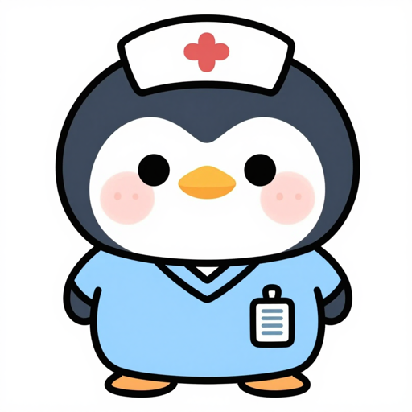

마이페이지
M-01
M-02
내 정보
지유님과 별이
현재 18주차예요. 태명과 주차 정보는 언제든 바꿀 수 있어요.

M-03
임신백과
이번 주 백과 보기
태아 발달, 엄마 몸 변화, 생활 가이드를 주차별로 읽어요.
›
다른 주차 찾아보기
이전 주차와 다음 주차 정보도 사전처럼 확인해요.
›
설정
이름과 태명
앱에서 부르는 이름을 바꿔요.
›
알림 시간
매일 받고 싶은 시간을 정해요.
›